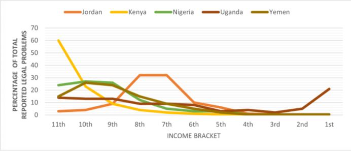

Do Socio-Economic Factors Influence the Perception of Crime and Judicial Outcomes?
A look at how income, race, religion and gender shape who gets justice, in the United States and in India.
Introduction
Crime remains a persistent challenge in societies worldwide, impacting individuals, communities, and institutions in multifaceted ways. While efforts to combat crime often focus on law enforcement and punitive measures, understanding the underlying socio-economic factors shaping crime perception and prevention strategies is crucial for effective and holistic intervention.
This report delves into the intricate relationship between socio-economic variables and the perception of crime across countries such as the United States and India, as well as the approaches adopted for its prevention. By examining how factors such as income inequality, education levels, employment opportunities, and access to resources intersect with perceptions of safety and criminality, I aim to shed light on the complex dynamics driving crime-related attitudes and behaviors.
Analysis of the Issue
In virtually every society, structural disparities persist among various groups based on factors like gender, religion, and ethnicity. Whilst governments frequently seek to address these inequities through policy interventions, such as anti-discrimination laws or affirmative action measures, which necessitate enforcement by the legal system, perhaps a more underlying and significant issue is that the judicial system itself may have an unequal representation. Why is this important? Because of its potential to influence judicial outcomes. For example, research has revealed that Arab and Israeli defendants get better outcomes in Israeli small claims courts when they are respectively matched to Arab and Israeli judges respectively. Moreover, it has been found that women are more likely to win workplace sex discrimination lawsuits when their cases are heard by female judges.
Socio-economic factors, such as income disparities and education levels, play a crucial role in shaping these perceptions. Individuals from lower-income backgrounds may face challenges accessing quality legal representation and understanding their rights, leading to disparities in their experiences within the legal system. Moreover, evidence also tells us that people in lower income brackets face more legal issues. Their lack of resources of those in higher income brackets to navigate legal frameworks and absorb legal shocks, makes them more susceptible to legal issues. This is displayed in the graph below.

Another critical factor to consider in the perception of crime is race. Stereotypes ingrained within societal perceptions often shape attitudes towards crime based on racial identities. These stereotypes can profoundly influence how individuals are perceived, treated, and even prosecuted within the criminal justice system. A great example of this is the treatment of African American individuals in America’s legal system. Research has uncovered that all-white juries in the U.S. convict Black defendants 16% more often than white defendants, a gap which is eliminated when there is just one Black member on the jury.
The consequences of these disparities in perception and judicial outcomes are far-reaching. Trust in the legal system, a cornerstone of societal stability, can erode when individuals perceive bias or inequality based on socio-economic factors. This lack of trust not only undermines the legitimacy of legal institutions but also perpetuates feelings of deprivation amongst marginalized communities. Moreover, the inconsistency in perceptions of fairness can have tangible effects on social cohesion, potentially leading to increased social unrest or dissatisfaction with the current circumstances. Addressing these consequences requires comprehensive strategies that prioritize equity and inclusivity within the legal system while also addressing broader socio-economic inequalities in society.
Perspectives
Global Perspective
In the ongoing discourse surrounding racial and socioeconomic biases within the American justice system, disparities in bail allocation highlight stark contrasts in treatment and outcomes. Sandra Bland, a 28-year-old African American woman, encountered and was mistreated by law enforcement in July 2015, resulting in her arrest and a $5,000 bail for a minor offense like failing to use her turn signal. This sum proved insurmountable for her family, ultimately leading to her tragic suicide after 3 days in jail. In contrast, Robert Durst, a Caucasian man and heir to an obscenely wealthy real estate family, faced murder charges but promptly secured release on a $300,000 bail. Despite admitting to dismembering the victim's body, Durst was acquitted of murder, underscoring disparities based on socio-economic status. These two cases reinforce the perspective that systemic biases end up privileging the wealthy and punishing the poor in a manner disproportionate to their crimes.
Another aspect affected by disparities is sentencing as a report reviewing over the cases of 3,200 innocent defendants exonerated in the U.S found that Black Americans are seven and a half times more likely than white Americans to be falsely convicted of serious crimes. This highlights the perspective where Black Americans face a significantly higher risk of being falsely convicted of serious crimes compared to their white counterparts, underscoring the deep-rooted racial inequalities in the legal system. This is seen in the case of Paul Carter. Growing up fatherless in poverty, Carter battled heroin addiction for years. In 1997, he was found with a syringe and a bottle cap in his possession, with minuscule amounts of heroin residue which was deemed “too insignificant to weigh”. Despite the negligible nature of the evidence, he was convicted of heroin possession, initially sentenced to ten years in prison. However, due to prior nonviolent convictions, his sentence was reconsidered, resulting in a sentence of life without parole. This highlights the deeply ingrained racial and socio-economic biases in the judicial system, often resulting in harsher penalties for marginalized individuals.
In contrast, Paul Manafort, a former campaign manager for President Trump, earned a living as a lobbyist, representing some of the world's most controversial figures. In 2016, Manafort faced indictments for engaging in a conspiracy against the United States, money laundering almost 18 million dollars, and making false statements. Despite the gravity of the charges, Manafort's substantial financial resources enabled him to mount an extensive legal defense. Despite facing a recommended sentence of 19 to 24 years, Manafort was rewarded with a sentence of less than 4 years. This case highlights the perspective that financial resources and social connections can lead to significantly more lenient treatment in the justice system, further exacerbating existing inequalities.
National Perspective
Religion's sway on judicial outcomes in India is evident, particularly in cases involving communal tensions or religious sensitivity. Such cases often draw public attention, where the religious affiliations of the accused, victims, or judges may impact verdicts. For instance, in the Akshardham terror case where six individuals, all Muslims, were accused of participating in a terror attack on the Akshardham Temple in Gujarat in 2002. Despite questionable evidence, all were convicted, with three sentenced to death. However, in 2014, the Supreme Court of India acquitted all the accused, stating that the prosecution had failed to establish their guilt and had relied on fabricated evidence. religious backgrounds may have influenced verdicts, underscoring the perspective that religious beliefs can significantly distort judicial outcomes in India, despite its secular system. Through lobbying and activity, religious organizations and leaders influence public opinion and legal outcomes. Their engagement may pressure the judiciary or legislature to match legislation or decisions with religious beliefs, enhancing religion's influence on Indian courts. Furthermore, A persistent issue within India’s judicial system is the systemic discrimination against women, highlighted by judicial stereotyping and gender bias. The Indian High Courts of Karnataka and Madhya Pradesh have been accused of perpetuating stereotypes that obstruct justice. This perspective is further underscored by the 1979 Mathura rape case, where the Supreme Court's ruling reflected deep-seated biases against women, leading to a miscarriage of justice. Despite subsequent legal reforms, these incidents reveal the ongoing influence of gender bias in the judiciary. Judicial stereotyping violates international human rights legislation, which India signed. The Convention on the Elimination of All Forms of Discrimination against Women (CEDAW) has consistently advocated for evidence-based research, judicial training, and diversity initiatives within the judiciary to counteract gender bias and discrimination stemming from judicial stereotyping. Legal reforms, judicial training, and gender equality and diversity activities are needed to overcome discrimination against women in India's judiciary. Through awareness, accountability, and challenging prejudices, India may create a more just and equitable legal system for all.
Courses of Action
In India’s case, to combat the wrongful convictions of women in the justice system, the Indian government has implemented a handbook on gender stereotypes to stop biases from leaking into the court.This handbook seeks to educate judges and legal professionals about harmful stereotypes, aiming to ensure more impartial and just legal outcomes. However, its effectiveness may be limited by several factors. First, the handbook's impact relies on consistent enforcement and compliance, which may vary by court and location. Second, deeply rooted societal biases require more than a handbook; they demand broader cultural changes and legislative reforms. Without ongoing training and accountability, the handbook alone may not fully eliminate gender stereotypes from court procedures. While it is a positive step, these challenges could limit its ability to prevent wrongful convictions of women.
In U.S, addressing disparities in the justice system has also seen mixed results. The California legislature rejected a bail reform bill that linked pre-trial bond to the accused's risk rather than wealth. This decision underscores the persistent challenges in reforming a system that often disadvantages the poor and marginalized. However, the rejection of this bill highlights the perspective that meaningful change in bail practices requires persistent advocacy and a willingness to prioritize justice over tradition. California and other states should examine bail reforms to remove the prejudices baked into the system.
Source Analysis
I mainly relied on articles available online, like “Follow the Money: How Rich Criminals get treated differently” by Matt Zebrog which provided specific examples of unfair and inaccurate sentencing and bail of victims such as Sandra Bland. This was extremely useful for providing a more refined perspective and was crucial for underscoring how light sentences and disproportionate bail can be bought with money. However, it lacked comprehensive statistical data on the prevalence of bias within the American judicial system, which forced me to look elsewhere.
Other research papers, such as "Race and Wrongful Convictions in the United States," offered valuable statistical data necessary for me to conduct a thorough analysis and underscore the significant impact of race on judicial outcomes. However, I observed that the paper's extensive use of numerical data and statistical information diluted the other information in paper, making it challenging to discern the root of the problem. Moreover, I utilized the book “Understanding White Collar Crime” by J. Kelly Strider. While, it was written over 22 years ago, deeming some of the statistical information and descriptions of the judicial system somewhat outdated, it did allow me to deepen my understanding of White collar crime at a greater level.
Finally, internet research was one of the most frequently employed methods. Official news media websites like The Guardian, Los Angeles Times, and India Today provided reliable information, as they are obliged to fact-check and offer perspectives from various viewpoints. This greatly assisted me. While sites like Quora offered some perspectives, they were occasionally unreliable due to the lack of verified information. Numerous research sites, including official government sites, also provided dependable data, though navigating and identifying relevant information and the reasons behind it was sometimes challenging.
Conclusion
In conclusion, this report delves into the far-reaching effects of race on legal decisions in America and shows how gender and religious prejudices are baked into the Indian justice system. By examining various research papers and case studies, I have learned how systemic bias has become institutionalised and perpetuates social inequality undermining fairness and justice principles. Despite attempts to deal with these issues, disparities still exist in addressing them adequately or treating everyone as required by the law. Moving forward, it is imperative for policymakers, lawyers and other citizens to coordinate their efforts towards breaking down these inequalities in order to create a more just and equitable legal system. Writing this report has deepened my understanding of the importance of continued advocacy and the need for comprehensive reforms to achieve lasting change.
Works Cited
- “Akshardham Temple Attack.” Wikipedia, https://en.wikipedia.org/wiki/Akshardham_Temple_attack#:~:text=In%20July%202006%2C%20the%20POTA,and%20Altaf%20Hussain%20five%20years. Accessed 19 May 2024.
- Anwar, Shamena, et al. “The Impact of Jury Race in Criminal Trials.” The Quarterly Journal of Economics, vol. 127, no. 2, 17 Apr. 2012, pp. 1017–55. https://doi.org/10.1093/qje/qjs014. Accessed 20 Apr. 2024.
- Garg, Eleen. “The Lost Right to Compensation of Wrongfully Convicted Victims: A Critique.” Academike, 1 Nov. 2020, https://www.lawctopus.com/academike/the-lost-right-to-compensation-of-wrongfully-convicted-victims-a-critique/. Accessed 27 Apr. 2024.
- Gross, R. Samuel. “Race and Wrongful Convictions in the United States.” The University of Michigan Law School, Sept.2022, https://www.law.umich.edu/special/exoneration/Documents/Race%20Report%20Preview.pdf. Accessed 24 Apr. 2024.
- Knepper, Matthew. “When the Shadow Is the Substance: Judge, Gender, and the Outcomes of Workplace Sex Discrimination Cases.” Journal of Labour Economics, vol. 36, no. 3, July 2018, https://www.journals.uchicago.edu/doi/pdfplus/10.1086/696150. Accessed 20 Apr. 2024.
- “Lack of Access to Justice.” Mount St. Joseph University, https://www.learningoutcomesassessment.org/wp-content/uploads/2018/12/2Featured-Justice-Student2-Lack-of-Access-to-Justice.pdf. Accessed 20 Apr. 2024.
- Mukherjee, Tiasha. “Judicial Stereotyping in India and the Need to Combat Institutional Gender Bias.” JURIST - Commentary - Legal News & Commentary, 19 Oct. 2020, www.jurist.org/commentary/2020/10/tiasha-mukherjee-judicial-stereotyping. Accessed 27 Apr. 2024.
- Prettitore, Paul. “Do the Poor Suffer Disproportionately from Legal Problems?” Brookings, 23 Mar. 2022, https://www.brookings.edu/articles/do-the-poor-suffer-disproportionately-from-legal-problems. Accessed 20 Apr. 2024.
- Shayo, Moses, and Asaf Zussman. “Judicial Ingroup Bias in the Shadow of Terrorism.” The Quarterly Journal of Economics, vol. 126, no. 3, 18 Aug. 2011, pp. 1447–84, https://doi.org/10.1093/qje/qjr022. Accessed 19 Apr. 2024.
- Strader, J. Kelly. Understanding White Collar Crime. 2002. Accessed 20 Apr. 2024.
- “To Remove Gender Stereotypes from the Law, a New SC Handbook.” The Hindu, 16 Aug. 2023, https://www.thehindu.com/news/national/to-remove-gender-stereotypes-from-the-law-a-new-supreme-court-handbook/article67201169.ece. Accessed 2 May 2024.
- Ulloa, Jazmine. “Here’s How State Lawmakers Plan to Reform the Bail System in California.” Los Angeles Times, 26 Mar. 2017, https://www.latimes.com/politics/la-pol-sac-bail-reform-legislation-20170326-story.html. Accessed 29 Apr. 2024.
- Zbrog, Matt. “Follow the Money: How Rich Criminals Get Treated Differently.” Forensics Colleges, 23 Mar. 2024, www.forensicscolleges.com/blog/follow-the-money/white-collar-prison#:~:text=The%20criminal%20justice%20system%20has,sentencing%2C%20and%20discrepancies%20in%20incarceration. Accessed 26 Apr. 2024.